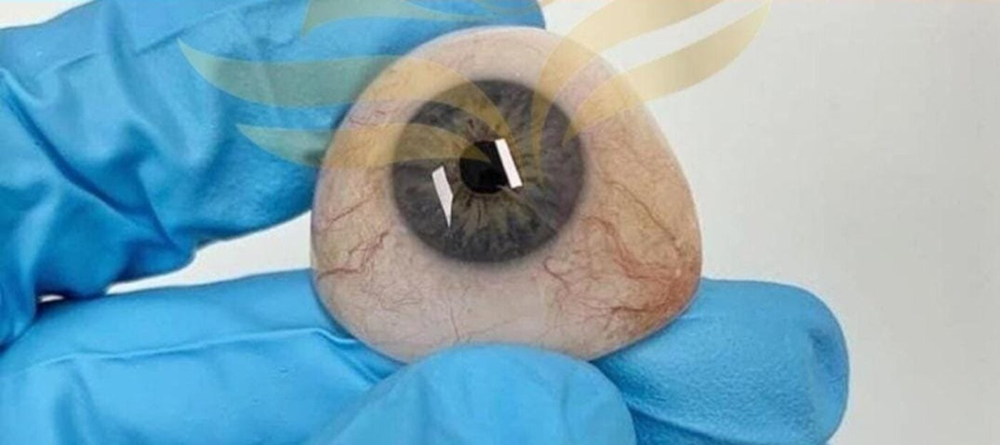
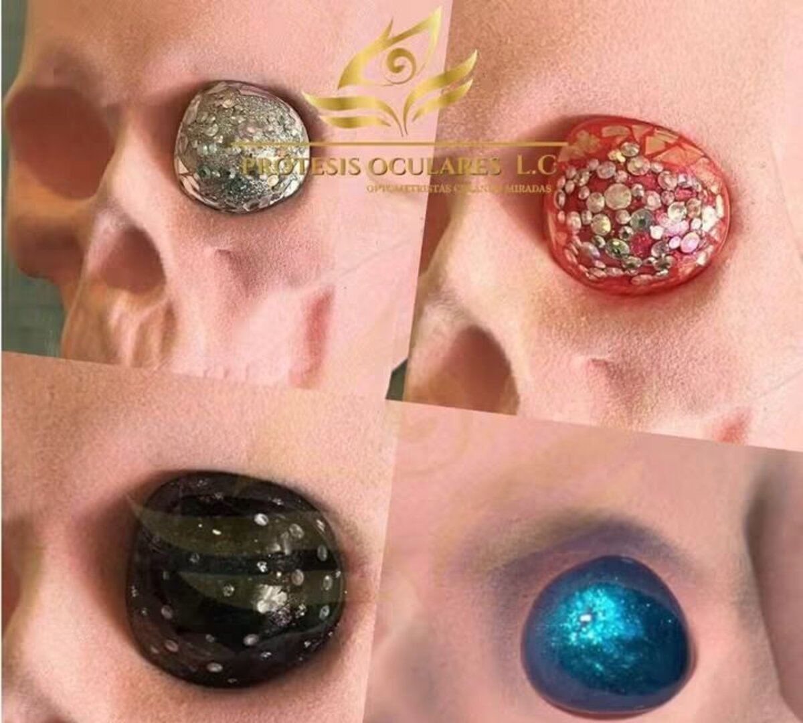
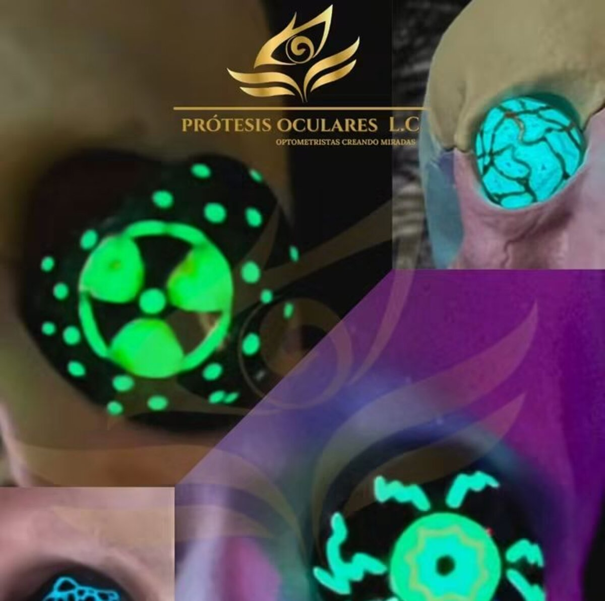
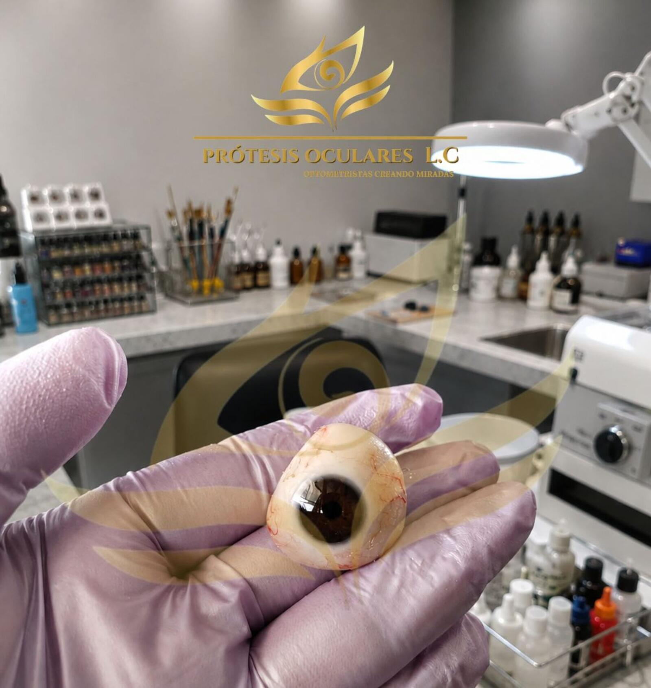
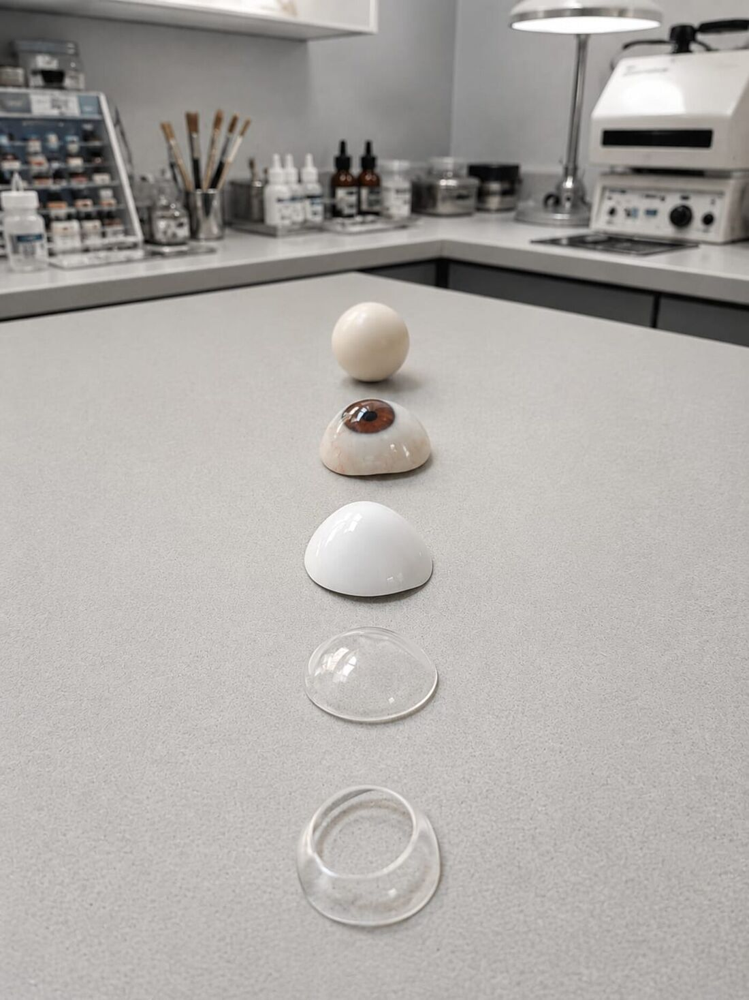
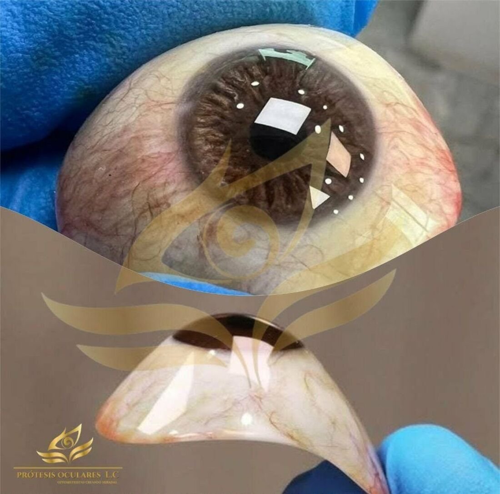
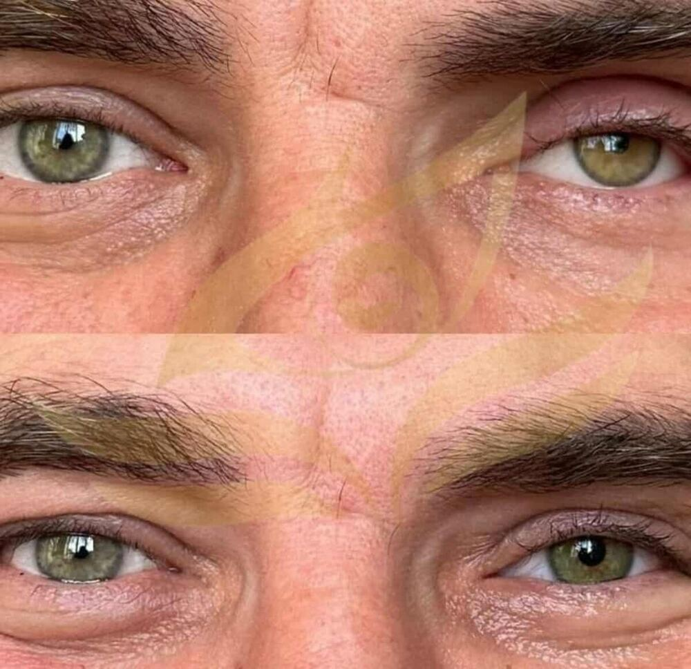
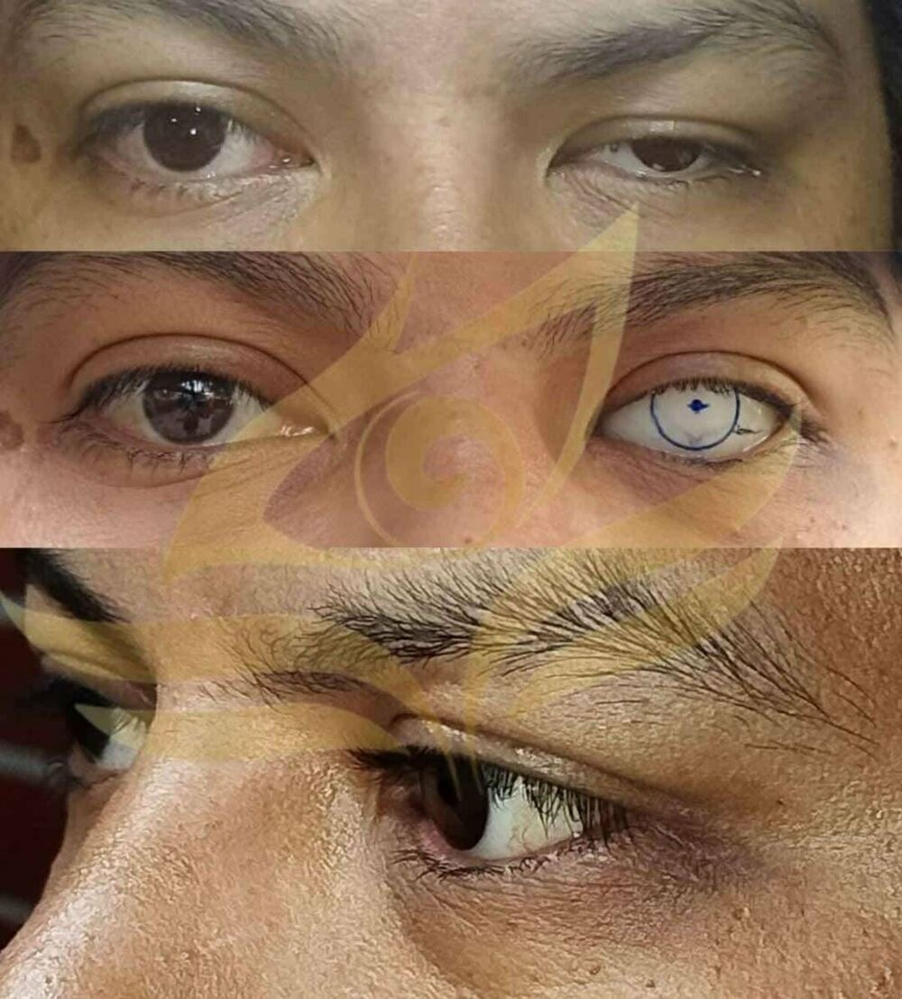
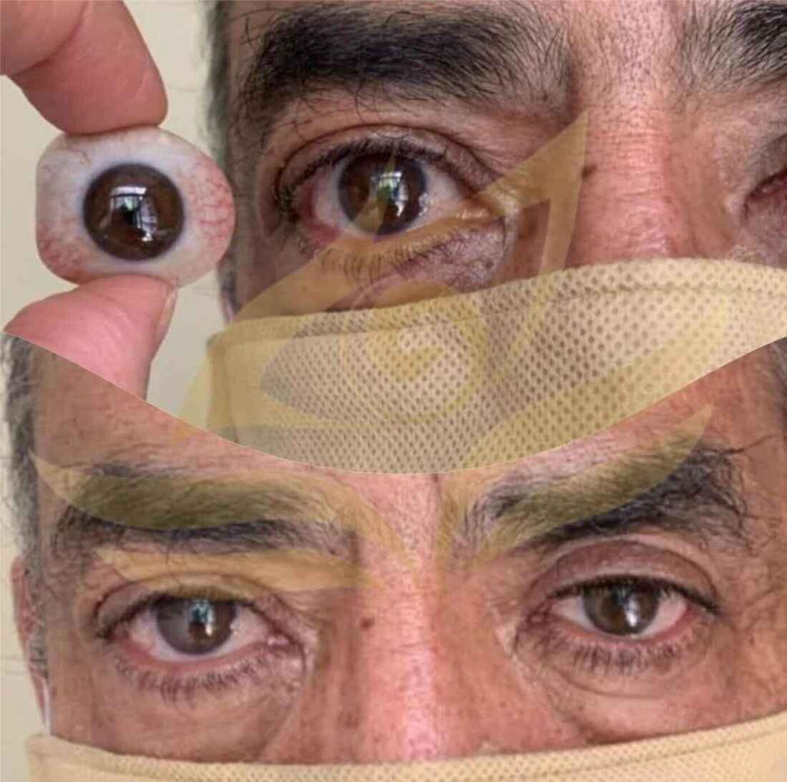
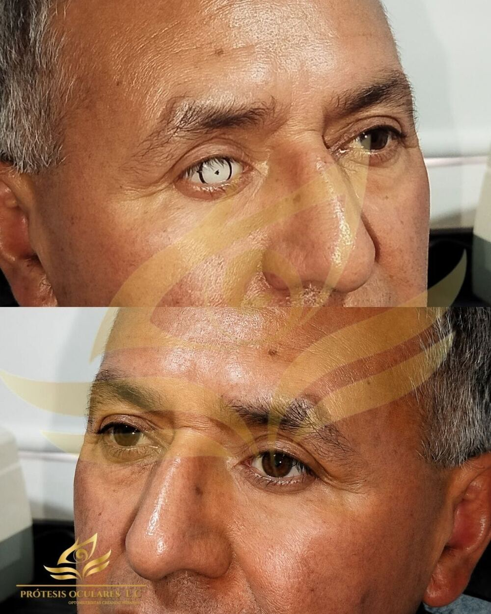

En Optometría L.C. diseñamos y pintamos a mano cada prótesis ocular hasta igualar el color, el brillo y la textura natural de tu mirada — con respaldo de formación UNAM y el trato humano que mereces al recuperar la confianza.
Cuatro razones por las que familias en Nezahualcóyotl y Atizapán de Zaragoza confían su mirada a Optometría L.C.
Cada iris se pinta y sella a mano hasta igualar el color, las venillas y el brillo natural de tu ojo — no hay dos prótesis iguales.
Diseños decorativos exclusivos con pigmentos que se iluminan al apagar la luz — una firma que solo encuentras aquí.
Optometristas formados con vínculo académico UNAM, combinando rigor clínico con seguimiento cercano en cada etapa.
Atención en dos zonas del Estado de México — Nezahualcóyotl y Atizapán de Zaragoza — coordinada directo por WhatsApp.
De la evaluación a la prótesis terminada: cada pieza se diseña, pinta y ajusta de forma individual para devolverte una mirada natural y segura.

A medidaEvaluación, adaptación y fabricación de tu prótesis ocular pintada a mano, igualando color y textura de tu ojo natural.
Preguntar por WhatsApp
PersonalizadoAcabados con brillantina, pedrería y diseños especiales para expresar tu estilo en cada detalle de tu prótesis.
Preguntar por WhatsApp
ExclusivoNuestro sello distintivo: prótesis con pigmentos fotoluminiscentes que se iluminan al apagar la luz.
Preguntar por WhatsApp

Laboratorio propio
Cada etapa hecha a mano

Un proceso claro, humano y sin prisas — como debe ser cuando se trata de recuperar tu mirada.
Escríbenos por WhatsApp, cuéntanos tu caso y agenda tu evaluación con nuestro equipo de optometristas.
Tomamos el molde, calibramos el tono exacto y pintamos tu prótesis a mano — con opción de diseños decorativos o brillo nocturno.
Ajustamos la prótesis, te enseñamos su cuidado y damos seguimiento cercano a tu adaptación.
Símbolos, texturas y destellos pintados con pigmentos fotoluminiscentes que se iluminan al apagar la luz. Un diseño exclusivo de Optometría L.C. para quien quiere que su prótesis cuente su propia historia.
Cada imagen es trabajo elaborado en nuestro laboratorio — sin fotografías genéricas ni de banco.




Entendemos que recuperar la mirada es un proceso profundamente humano. Por eso combinamos técnica, arte y acompañamiento en cada visita.
Evaluamos cada caso con rigor óptico y formación con respaldo UNAM, dando seguimiento cercano en cada etapa.
Sabemos que recuperar la mirada es un proceso emocional. Te acompañamos con empatía y respeto en todo momento.
De la forma al brillo: cada prótesis se adapta a tu anatomía y a tu forma de expresarte.
Es una pieza hecha a medida que reemplaza estéticamente un ojo perdido o afectado por cirugía, trauma o enfermedad, devolviendo simetría y naturalidad a la mirada. La evaluamos y fabricamos según cada caso particular.
Sí, cada prótesis se pinta a mano capa por capa hasta igualar el color, las venillas y el brillo de tu ojo natural, logrando un resultado hiperrealista y personalizado.
Sí. Además de la prótesis con apariencia natural, hacemos diseños decorativos con brillantina y pedrería, y nuestra especialidad exclusiva: prótesis con pigmentos que brillan en la oscuridad.
Atendemos en Nezahualcóyotl y Atizapán de Zaragoza, Estado de México. Escríbenos por WhatsApp y coordinamos contigo el lugar y horario más conveniente para tu cita.
Directamente por WhatsApp al 55 7556 5562 o 55 3052 5873. Cuéntanos tu caso y te orientamos sin compromiso sobre el proceso y siguientes pasos.
Exámenes visuales completos, lentes correctivos para miopía, hipermetropía, astigmatismo y presbicia, diagnóstico de enfermedades oculares y terapia visual y rehabilitación.
Agenda tu evaluación hoy mismo y da el primer paso hacia una prótesis ocular hecha exclusivamente para ti.
Formación con respaldo UNAM · Atención en Nezahualcóyotl y Atizapán de Zaragoza
Cuéntanos tu caso y te respondemos directo por WhatsApp — sin filas de espera ni formularios eternos.